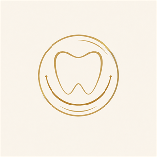
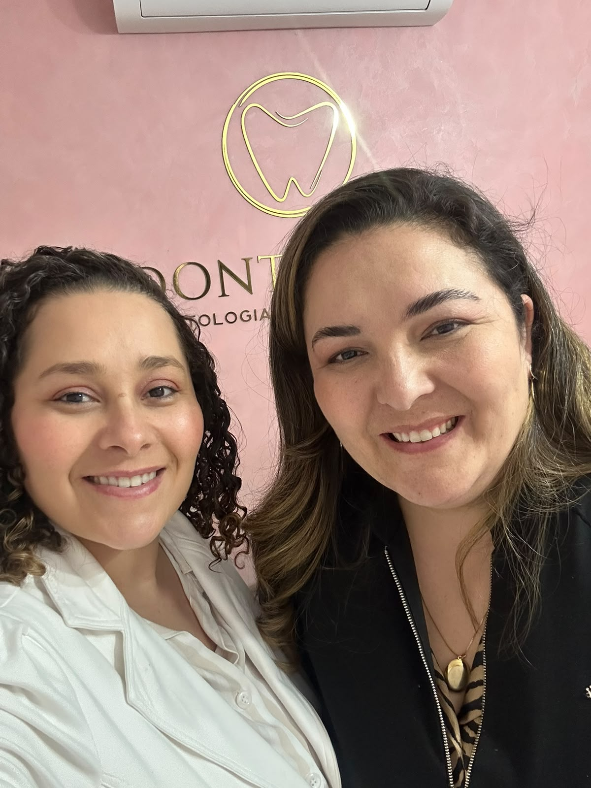
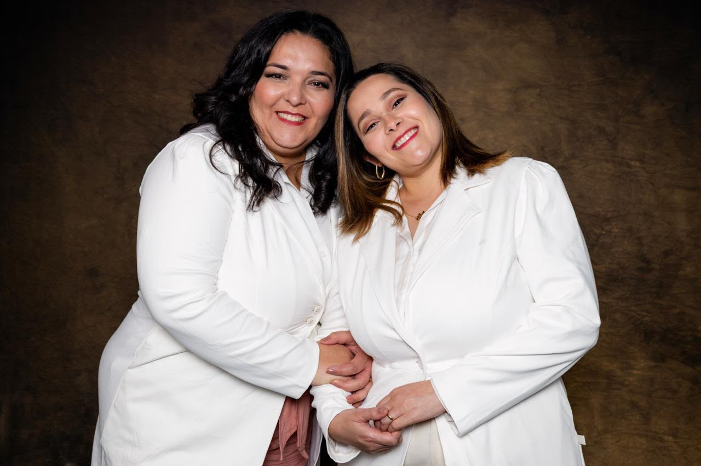

Implantes dentários
Avaliação das possibilidades de reabilitação com implantes, considerando condições clínicas, planejamento e acompanhamento de cada etapa.
Explorar este cuidado ↗
Odonto InterOdontologia integrada à saúdeAlphaville · Barueri
Odontologia acolhedora, orientação clara e atenção individualizada para você se sentir bem em cada etapa.
A clínica
A Odonto Inter nasceu do desejo de oferecer um atendimento mais humano, acolhedor e atento às necessidades de cada paciente.
Em Alphaville, construímos uma experiência com escuta, transparência e orientação individualizada — respeitando o seu tempo, sua história e seus objetivos.
Conheça nosso jeito de atender →A essência da Odonto Inter

Portfólio atual da clínica
Reorganizamos os serviços já divulgados pela Odonto Inter em uma jornada mais clara. A indicação e o planejamento dependem sempre de avaliação individualizada.
Avaliação das possibilidades de reabilitação com implantes, considerando condições clínicas, planejamento e acompanhamento de cada etapa.
Explorar este cuidado ↗Planejamento de alternativas para reposição ou reconstrução dentária, buscando equilíbrio entre função, conforto e adaptação ao caso.
Explorar este cuidado ↗Uma avaliação individual para compreender as possibilidades de clareamento e os cuidados adequados às condições de cada sorriso.
Explorar este cuidado ↗Planejamento cuidadoso que considera as condições clínicas, os objetivos e as possibilidades adequadas para cada pessoa.
Explorar este cuidado ↗Avaliação das funções e dos hábitos orofaciais relacionados à mastigação, deglutição, respiração e fala.
Explorar este cuidado ↗Avaliação individualizada das necessidades funcionais e estéticas da região orofacial, com indicação definida pelo profissional responsável.
Explorar este cuidado ↗Implantes · Prótese · Clareamento · Facetas · Odontologia miofuncional · Harmonização orofacial

duas irmãsA experiência Odonto Inter
Da primeira conversa ao acompanhamento, nossa equipe está presente para orientar suas escolhas com respeito e transparência.
Concierge Odonto Inter
Conte o que você precisa em poucos passos. Nossa concierge digital organiza seu pedido e deixa tudo pronto para você continuar com a recepção pelo WhatsApp.
Seus dados permanecem neste dispositivo e só seguem adiante quando você decide abrir o WhatsApp.